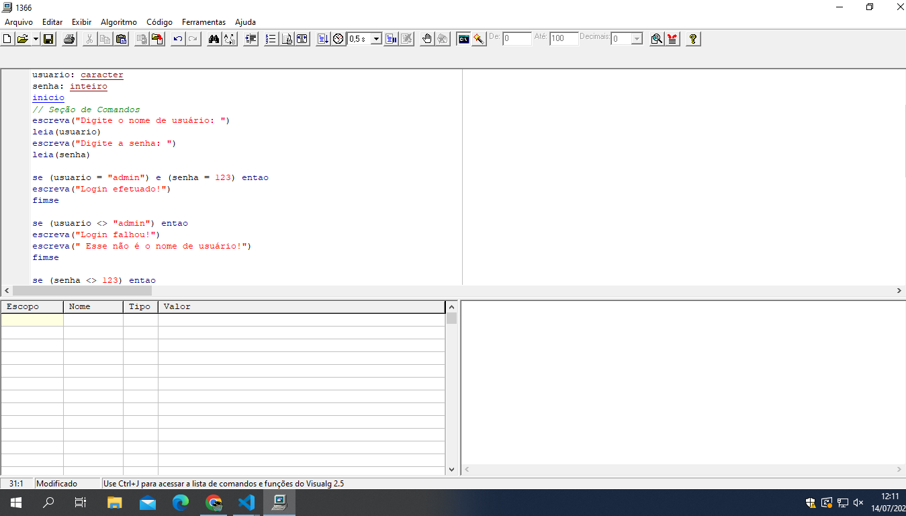

algoritimo 52
Criar um programa que simule o login de um roteador. O nome de usuário (username) é "admin" e a senha (password) "123". Pedir ao usuário para digitar username e password. Caso os dados estejam corretos, mostrar a mensagem "Login efetuado!", caso contrário "Login falhou!". DESAFIO: Mostrar mensagens específicas para erro de username, e password ou de ambos.
algoritmo "52" // Função : // Autor : // Data : 30/06/2023 // Seção de Declarações var usuario: caracter senha: inteiro inicio // Seção de Comandos escreva("Digite o nome de usuário: ") leia(usuario) escreva("Digite a senha: ") leia(senha) se (usuario = "admin") e (senha = 123) entao escreva("Login efetuado!") fimse se (usuario <> "admin") entao escreva("Login falhou!") escreva(" Esse não é o nome de usuário!") fimse se (senha <> 123) entao escreva("Login falhou!") escreva(" Esa não é a senha!") fimse fimalgoritmo
a agora o codigo funcionando